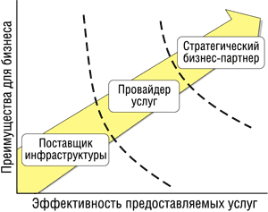
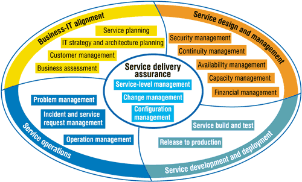

Андрей Колесов
Важная роль ИТ в успешном ведении основного бизнеса компаний - это сегодня почти очевидный факт. Поэтому мы не будем говорить о возможных потерях для бизнеса в результате неисправности оборудования, сбоев ПО, трудностей с наращиванием масштабируемости и производительности и т. д. Отметим другой, не менее значимый момент: затраты на поддержку и развитие информационных систем неизменно растут, и доля их в общей структуре расходов предприятий неизменно увеличивается. Это стало особенно ощутимо в период мирового экономического кризиса первых лет нынешнего столетия. В результате перед руководителями многих организаций встает очень непростая проблема: необходимо повысить качество обслуживания при одновременном сокращении затрат.
Сложность решения такой задачи состоит в том, что для этого нужно достаточно радикально пересматривать общее позиционирование сервисных ИТ-подразделений в структуре компаний. Одна сторона вопроса заключается в том, что ИТ-инфраструктура предприятий зачастую формировалась хаотично, оперативно отвечая на те или иные запросы со стороны основного бизнеса. В результате ИТ-службы имеют весьма запутанную структуру как с технической, так и с экономической точки зрения. Вторая сторона проблемы в том, что ИТ-департаменты исторически рассматриваются как вспомогательные, сугубо бюджетные подразделения. Как следствие, руководство компаний не может четко выявить взаимосвязь между инвестициями в развитие и поддержку ИС и повышением эффективности основного бизнеса.
Эволюция ИТ-подразделений
В условиях экономического кризиса ИТ-подразделения многих компаний довольно неожиданно для себя наряду с дефицитом выделяемых им бюджетов столкнулись с новыми требованиями со стороны руководства: теперь им приходилось предоставлять отчеты по расходам и сведения об ожидаемой прибыли от инвестиций в ИТ-ресурсы. Это подтверждается целым рядом исследований по всему миру. Результаты этих исследований говорят также о том, что ИТ-менеджеры не всегда могут четко определить, какие преимущества получают внутренние или внешние клиенты ИТ-подразделений от той или иной услуги.
Впрочем, это трудно поставить в вину руководителям ИТ-служб: задача установления четких связей между ИТ-операциями и соответствующим бизнесом в общем случае практически неразрешима. (В этой связи можно вспомнить не такую уж давнюю историю нашей страны: попытки оценивать эффективность внедрения средств автоматизации и даже перевод вычислительных центров предприятия на хозрасчет в большинстве своем закончились неудачей.) Однако парадокс ситуации заключается в том, что развитие ИТ-подразделений должно идти именно в направлении этой теоретически недостижимой цели (рис. 1).
|  | Рис. 1. Эволюция ИТ-подразделений предприятий (по версии Meta Group).
|
По оценкам Meta Group, ситуация на рынке такова, что сегодня около 75% ИТ-подразделений - это не более чем поставщики инфраструктуры, ориентированные исключительно на ее технологическое развитие вне связи с деятельностью предприятий в целом. В то же время компании хотят получать экономически эффективные ИТ-услуги, отвечающие их индивидуальным потребностям и способные помочь им в решении ключевых бизнес-задач. Поэтому ИТ-департаменты должны предпринять усилия и сделать шаг вперед, который позволит им стать не просто поставщиками ИТ-инфраструктуры, а настоящими сервис-провайдерами, а затем и стратегическими партнерами руководства компаний, предоставляющими широкий спектр услуг, эффективность которых поддается достаточно простой оценке со стороны их потребителей.
Meta Group, опираясь на данные исследования 2003 г., считает, что во всем мире только 25% компаний приступили к внедрению сервисной модели обслуживания и лишь 5% из них удалось вырасти до того уровня, когда ИТ-подразделение становится для своей компании ценным стратегическим ресурсом. Однако по прогнозам, приведенным в том же отчете, в ближайшие три года такой переход сможет завершить подавляющее большинство ИТ-подразделений крупных и даже средних компаний. Тех же из них, кому не суждено будет успешно реализовать новые принципы работы, скорее всего, ждет расформирование, а их функции будут возложены на внешние организации по схеме аутсорсинга...
Решение задачи повышения эффективности работы ИТ-подразделений часто связывают с применением специального ПО для автоматизации управления. Это верно лишь отчасти. Ведь, как было показано выше, речь идет не о простом снижении затрат на ту или иную операцию, а о структурной перестройке технических служб. Именно поэтому многие организации, внедряющие у себя такое ПО, довольно быстро понимают, что перестройка их деятельности возможна только на серьезной методологической базе.
Стандарты ITIL и методология HP ITSM
Библиотека инфраструктуры информационных технологий (IT Infrastructure Library, ITIL) - общепризнанный стандарт де-факто для управления техническим обслуживанием (Service Management) в информационных системах предприятий. Реализация этого проекта была начата еще в начале 80-х годов прошлого столетия по инициативе правительства Великобритании.
В разгар серьезного экономического спада того времени государство уже тогда поняло необходимость снижения стоимости и повышения эффективности работы по обслуживанию ИТ-инфраструктуры. Реализация проекта была возложена на специальное агентство British Central Computer & Telecommunications Agency (CCTA), где была создана команда, в которую вошли консультанты и представители ИТ-поставщиков и пользователей. Задачей ее было обобщение передового опыта в данной области. В ходе этой работы была выпущена серия из сорока книг, использующая общий словарь терминов. Позднее, в 1989 г., эти издания были несколько переработаны и изданы в виде семи томов, получивших название ITIL*.
* Рекомендации ITIL записаны только на английском языке. Официальных переводов на другие языки не делается, так как очень сложно обеспечить адекватное воспроизведение терминологии. Неофициальные переводы, в том числе на русский язык, имеются, но следует иметь в виду, что ITSMF не несет ответственности за них. Примерно той же тактики локализации придерживается компания HP в отношении документации ITSM.
Согласно ITIL, цель IT Service Management - предоставление и поддержка ИТ-обслуживания, которое должно соответствовать бизнес-требованиям организаций. ITIL включает в себя всеобъемлющий, последовательный и непротиворечивый набор лучших практик в области IT Service Management, предлагая апробированный путь к повышению эффективности использования информационных систем и основного бизнеса компаний в целом.
В настоящее время стандарты ITIL поддерживаются и пропагандируются общественным форумом IT Service Management Forum (ITSMF), который объединяет различные организации и компании, заинтересованные в повышении качества ИТ-сервиса. Кроме того, многие консультационные и обучающие фирмы по всему миру предлагают услуги по тренингу и сертификации ИТ-профессионалов в области ITIL.
Корпорация Hewlett-Packard (http://www.hp.com) - одна из компаний, полностью взявшая на вооружение рекомендации ITIL. Ее применение позволило HP не только войти в число ведущих поставщиков услуг консалтинга и внедрения, но и стать одним из крупнейших провайдеров услуг по обучению основам ITIL и сертификации этих знаний.
Для практического применения ITIL компания HP разработала собственный вариант методологии, получивший название "Типовой модели HP ITSM" (IT Service Management Reference Model). Ее первый вариант был опубликован в сентябре 1997 г., следующий - в январе 2000 г. Действующая сегодня версия HP ITSM 3.0 выпущена в июне 2003 г. Подчеркнем, что HP ITSM построена в точном соответствии с ITIL и не противоречит ее положениям.
Следует также отметить, что ITSM (равно как и ITIL) носит лишь рекомендательный характер. Однако одна из ключевых идей этой методологии состоит в том, что, несмотря на разнообразие информационных систем, их работа на 80% может быть построена на базе стандартизованных процессов и регламентов. Поэтому адаптация методологии к конкретным, специфическим задачам предприятия требует настройки не более 20% системы ИТ-сервиса.
Согласно ITIL, ПО для управления ИТ-инфраструктурой должно рассматриваться в первую очередь как вспомогательное средство поддержки методологии, автоматизации ее применения. В настоящее время на рынке предлагается достаточно много продуктов, нацеленных на решение таких задач (есть и российские разработки). Однако среди ПО мирового уровня, наверное, в первую очередь нужно отметить пакеты, поставляемые компаниями BMC (продукт Patrol), Computer Associates (Unicenter), HP (OpenView) и IBM (Tivoli). В нашу задачу сейчас не входит сравнительный анализ этих продуктов, но, по оценкам некоторых экспертов (в частности, исследовательской фирмы Bloor Research), идея Service Management в наибольшей степени реализована в OpenView. Во многом это объясняется тем, что при разработке этого ПО была учтена концепция ITIL (продукт имеет сертификат на максимальное соответствие стандартам ITIL).
Структура модели ITSM
Согласно модели ITSM, в общем жизненном цикле обслуживания ИС выделяются пять основных групп процессов** (рис. 2):
- Service delivery assurance (обеспечение обслуживания);
- Business-IT alignment (согласование бизнеса и ИТ);
- Service design and management (планирование и управление услугами);
- Service development and deployment (разработка и внедрение сервисов);
- Service operations (оперативное управление услугами).
** В русском языке нет устоявшейся терминологии в этой сфере. Мы приводим английские термины и их перевод, представленный в официальных документах HP.
|  |
| Рис. 2. Типовая модель управления ИТ-услугами HP ITSM.
|
Ниже мы кратко рассмотрим характеристики каждой группы и входящие в них процессы. С более подробными описаниями можно ознакомиться в информационных материалах HP ITSM.
Service delivery assurance
Процессы данной группы обеспечивают предоставление соглашений и информации, описаний взаимодействия для выполнения принятых сервисных обязательств. Центральное положение этой группы на схеме (рис. 2) отражает ее связующую роль в ITSM. В состав этой группы входят три типа процессов.
Configuration management (конфигурационное управление) отвечает за регистрацию и отслеживание состояния каждого компонента ИТ-инфраструктуры. Все сведения о компонентах (технические характеристики, состояние и различные взаимосвязи) хранятся в локальной базе данных Configuration Management Database.
Change management (управление изменениями) гарантирует, что ИТ-подразделения используют стандартные методы и процедуры для управления всеми изменениями в информационной среде предприятия.
Service-level management (управление уровнями услуг) позволяет выделять отдельные специфические услуги для потребителей в рамках стандартного спектра предоставляемого сервиса.
Business-IT alignment
Эта группа обеспечивает реализацию ИТ-стратегии в соответствии с целями бизнеса и создает основу для количественной оценки эффективности затрат на ИТ. В нее входят следующие процессы.
Business assessment (анализ потребностей бизнеса в ИТ) подразумевает анализ рынка ИТ-услуг, определение потребностей бизнеса и формулировку конкретных требований к ИТ-стратегии и ИТ-сервису. В частности, здесь определяется приоритет тех или иных сервисов с точки зрения пользователей и оценивается размер сумм, которые потребители готовы платить за эти услуги.
Customer management (управление клиентами) позволяет ИТ-подразделению функционировать в качестве действительного партнера в решении бизнес-задач пользователей.
IT strategy and architecture planning (разработка стратегии развития ИТ) позволяет определить общие количественные показатели работы ИТ-службы и сформировать последовательный план развития ИТ-стратегии и ИТ-архитектуры.
Service planning (планирование услуг) помогает организациям видеть, для чего нужна каждая новая услуга, каков будет бизнес-эффект от ее внедрения, а также показывает, что ИТ-подразделение осознает риски, связанные с реализацией этой услуги.
Service design and management
Процессы этой группы предоставляют детальную информацию, необходимую для проектирования новых сервисов, управления доступностью и качеством этих сервисов, а также поддержания нужного баланса между качеством и стоимостью.
Continuity management (управление ресурсами) должен обеспечить ИТ-подразделению способность предоставлять заданный уровень услуг даже в результате серьезных внешних потрясений бизнеса.
Security management (управление безопасностью) позволяет решать вопросы безопасности корпоративной информации и предоставляемых услуг.
Availability management (управление доступностью услуг) управляет возможностью реального получения услуг пользователями. Это в числе прочего подразумевает, что потребители должны быть в курсе всех имеющихся и планируемых ИТ-услуг.
Capacity management (планирование услуг) подразумевает, что ИТ-службы способны справляться с потоком поступающих заданий на предоставление услуг.
Financial management (финансовое управление) позволяет ИТ-департаменту определять стоимость предоставляемых услуг и покрывать свои расходы за счет платы со стороны потребителей.
Service development and deployment
Эта группа обеспечивает создание и тестирование новых сервисов и используемых ими инфраструктурных компонентов, включая установку оборудования и ПО, разработку приложений, обучение и т. п. Сюда входят два типа процессов.
Service build and test (разработка и тестирование) выполняют разработку и проверку работоспособности и функциональности внедряемых сервисов.
Release to production (ввод в эксплуатацию) позволяет тиражировать новые или модернизированные компоненты и сервисные функции для конкретных пользователей с учетом их конкретных потребностей.
Service operations
Данные процессы обеспечивают ежедневный мониторинг предоставляемых услуг, управляют запросами пользователей, отслеживают удовлетворенность клиентов и оценивают общий уровень качества выполняемых сервисных работ.
Operation management (оперативное управление) позволяет управлять постоянным процессом предоставления услуг в соответствии с заданным уровнем требований к ним.
Incident and service request management (управление инцидентами) обеспечивает фиксацию всех инцидентов в информационной системе и быстрое реагирование на нужды потребителей.
Problem management (управление проблемами) фокусируется на задаче снижения числа инцидентов на основе анализа и прогноза работы информационной системы и заблаговременного устранения потенциальных проблем или более оперативного их разрешения.
Последовательность реализации
Разумеется, воплощение в жизнь модели ITSM революционными способами ("...разрушим до основанья, а затем...") - совершенно нереальная задача и, самое главное, ненужная. Реализовать эту модель можно только эволюционным, последовательным способом. Причем это относится не только к действующим организациям, преобразование ИТ-служб которых не должно повредить функционированию основного бизнеса, но и к компаниям, создающим свою ИТ-инфраструктуру с нуля. Не говоря уже о том, что мы имеем дело с типовой моделью, воплощение которой у каждой конкретной компании будет иметь свои специфические очертания, методы и последовательность ее реализации будут тоже разными.
Методология HP ITSM выделяет три основные стадии эволюции ИТ-служб.
Managing the infrastructure (управление инфраструктурой). Мы уже говорили выше, что сегодня большинство ИТ-подразделений предприятий выступают в роли поставщиков ИТ-инфраструктуры. Поэтому работу нужно начинать с упорядочения процессов, относящихся к этим задачам. Это:
- управление операциями;
- управление конфигурацией;
- управление изменениями;
- управление инцидентами и сервисными запросами.
Managing the services (управление сервисами). Следующий этап связан с переходом к сервис-ориентированной схеме работы ИТ-подразделения, которая подразумевает использование соглашений об уровне услуг (service-level agreement, SLA) во взаимоотношениях с их потребителями. При этом должны быть сформированы следующие процессы:
- создание и тестирование сервисов;
- способность к воспроизводству;
- сервис-ориентированное управление;
- управление проблемами;
- управление непрерывностью;
- управление доступностью;
- управление объемами услуг;
- управление финансами.
Managing the business value of IT (управление деловыми характеристиками ИТ). Именно на этом этапе ИТ-подразделение должно выйти на уровень стратегического бизнес-партнера руководства компании. Одна из важнейших характеристик этой стадии - полная интеграция ИТ-процессов в общую бизнес-модель организации. Как результат, такой статус подразумевает, что управляющие фирмой должны четко понимать, как те или иные инвестиции в ИТ могут способствовать развитию основного бизнеса компании. На этой стадии должны быть реализованы остальные процессы ITSM:
- бизнес-оценка;
- управление отношениями с пользователями;
- планирование ИТ-стратегии и развития архитектуры;
- планирование развития сервисов.
Реализация методологии ITSM напрямую связана с общей задачей повышения уровня управления качеством работы компаний. В качестве ориентиров могут быть выбраны стандарты ISO 9000, но для ИТ-подразделений лучше использовать модель CMM (Capability Maturity Model, модель уровня зрелости), в большей степени ориентированную на ИТ-отрасль и подразумевающую несколько стадий ее развития (см. таблицу).
Соответствие уровней управления ИТ-инфраструктурой по методологии HP ITSM и по стандартам CMM
| Уровни ИТ-управления на предприятии | Процессы по HP ITSM Reference Model | Уровни управления качеством по CMM |
| 1. Initial (начальный). Устойчивая система управления отсутствует, ключевые процессы не выделены, хаос... | ||
| Уровень 1. Управление инфраструктурой | Управление операциями Управление конфигурацией Управление изменениями Управление инцидентами и сервисными запросами |
2. Repeatable (воспроизводимый). Состояние деловых процессов таково, что позволяет поддерживать повторяемые сервисы |
| Уровень 2. Управление сервисами | Создание и тестирование сервисов Способность к воспроизводству Сервисно-ориентированное управление Управление проблемами |
3. Defined (определенный). Используются стандартизованные процессы для предоставления сервисов и выполнения SLA-соглашений |
| Управление непрерывностью Управление доступностью Управление объемами услуг Управление финансами |
4. Managed (управляемый). Возможность измерения качества и количества услуг | |
| Уровень 3. Управление деловыми характеристиками ИТ | Бизнес-оценка Управление отношениями с пользователями Планирование ИТ-стратегии и развития архитектуры Планирование развития сервисов |
5. Optimizing (оптимизируемый). Процессы и сервисы изменяются при необходимости повышения качества и оперативности обслуживания |
В заключение нужно сказать следующее. Рекомендации ITIL и модель HP ITSM - лишь путеводитель, с помощью которого компании могут сделать свой бизнес более эффективным, а ИТ-подразделения - повысить свою значимость в общей деятельности. Может также сложиться впечатление, что данная методология будет полезна только очень крупным компаниям. Это, конечно же, не так. Она полезна всем, кто применяет ИТ в своем бизнесе. Более того, для малых и средних предприятий формализация ИТ-процессов может быть даже более актуальной, чем для крупных корпораций. Вот простой пример: из компании увольняется один сотрудник. Возможны варианты ситуации: это один из сотни сотрудников ИТ-подразделения крупной компании или же он воплощает в своем лице весь ИТ-отдел небольшой фирмы.